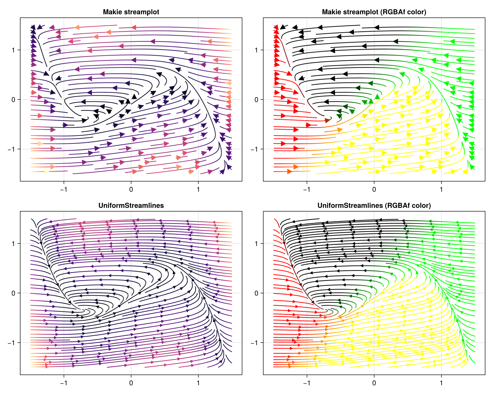

Examples
FitzHugh–Nagumo Model
The FitzHugh–Nagumo model is a simplified model of neuronal excitability. Its phase-plane dynamics are described by the system
\[\dot{v} = \frac{v - w - v^3 + s}{\varepsilon}, \qquad \dot{w} = \gamma v - w + \beta,\]
where $v$ is the membrane potential, $w$ is a recovery variable, and $(\varepsilon, s, \gamma, \beta)$ are parameters.
using UniformStreamlines
using CairoMakie
struct FitzhughNagumo{T}
ϵ::T
s::T
γ::T
β::T
end
# Two-argument form used internally; single-argument wrapper passed to evenstream
f(x, P::FitzhughNagumo) = Point2f(
(x[1] - x[2] - x[1]^3 + P.s) / P.ϵ,
P.γ * x[1] - x[2] + P.β,
)
P = FitzhughNagumo(0.1, 0.0, 1.5, 0.8)
f(x) = f(x, P)
str = evenstream(-1.5:1.5, -1.5:1.5, f, min_density = 3, max_density = 7)The four panels below compare Makie's built-in streamplot with UniformStreamlines. The bottom row uses colorize to colour the lines by speed (:norm) and by velocity direction (custom RGBAf function):
fig = Figure(size = (1000, 800))
# Row 1 — Makie streamplot
ax11 = Axis(fig[1, 1], title = "streamplot (:magma)")
streamplot!(ax11, f, -1.5..1.5, -1.5..1.5, colormap = :magma)
ax12 = Axis(fig[1, 2], title = "streamplot (RGBAf color)")
streamplot!(ax12, f, -1.5..1.5, -1.5..1.5, color = p -> RGBAf(p..., 0.0, 1.0))
# Row 2 — UniformStreamlines
c = colorize(str, :norm)
colors = colorize(str, (p, v) -> RGBAf(v[1], v[2], 0.0, 1.0))
ax21 = Axis(fig[2, 1], title = "UniformStreamlines (:norm → :magma)")
streamlines!(ax21, str; color = c, colormap = :magma, with_arrows = true, arrows_spacing = 0.4)
ax22 = Axis(fig[2, 2], title = "UniformStreamlines (RGBAf color)")
streamlines!(ax22, str; color = colors, with_arrows = true, arrows_spacing = 0.4)
fig